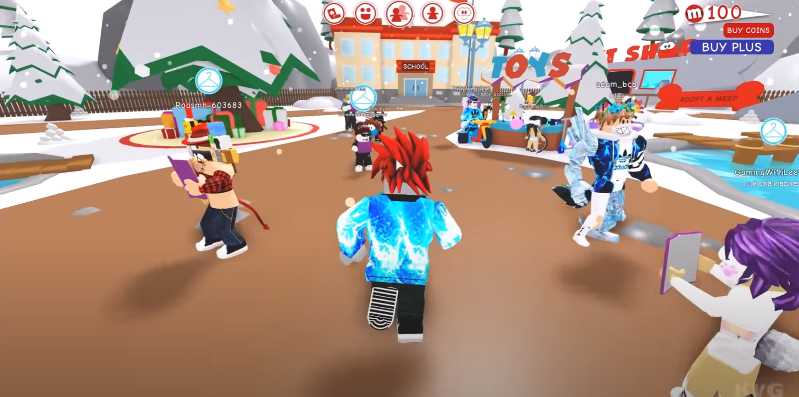
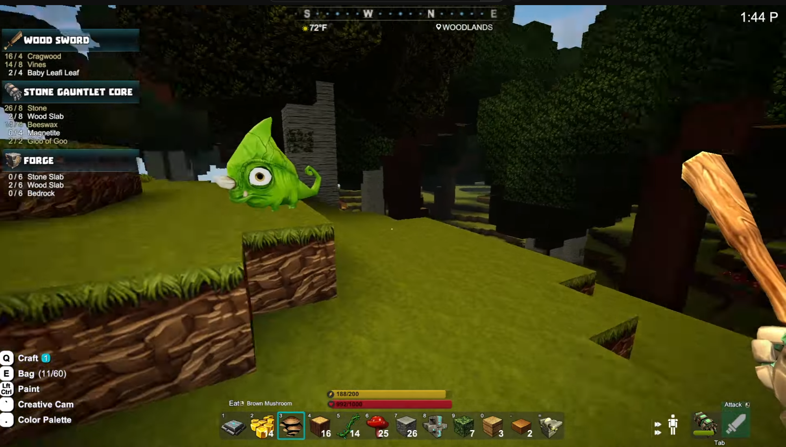
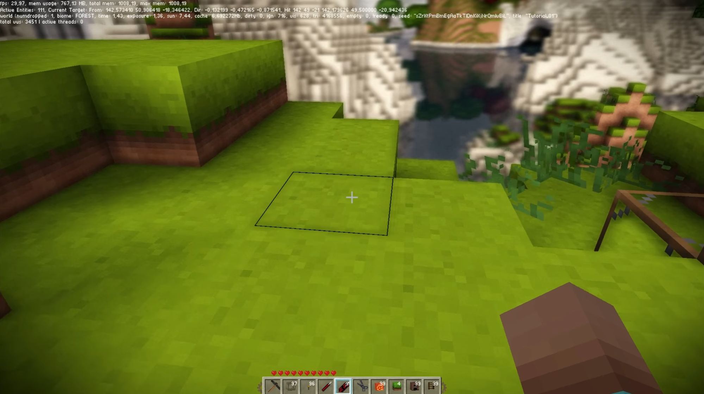
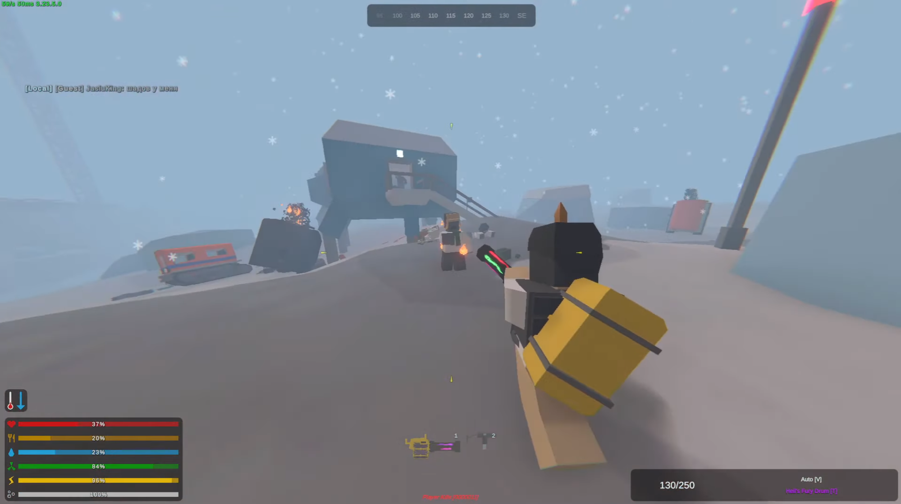
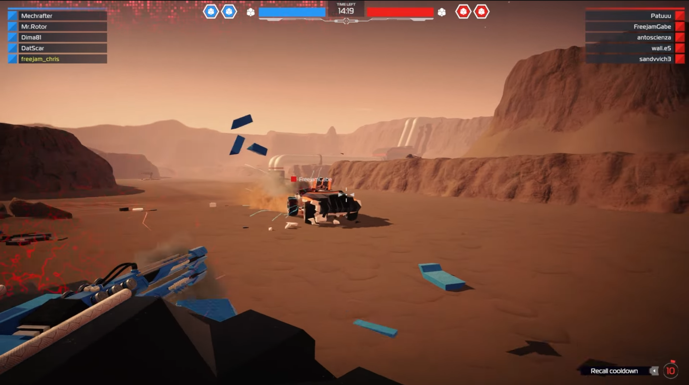

Games Like Minecraft
There are several free games that are similar to Minecraft in terms of its gameplay, mechanics, and style. However, they all have a more polished and modern graphics style and offer a few different things that stand out.
Roblox
Roblox's game creation platform allows users to create and play games that range from simple obstacle courses to complex simulations and multiplayer games. It also has a vast library of user-generated content, which gives it a constantly evolving selection of games. Roblox's development tools are accessible to users with little or no programming experience, unlike Minecraft.

Creativerse
Quite similar to Minecraft, Creativerse is a sandbox game with a focus on crafting, building, and exploration. Players can explore hand-crafted worlds, gather resources, and use them to build structures and create machines. It also has a crafting system that is more streamlined and intuitive than Minecraft's. The only downside is that Creativerse has a more limited multiplayer mode than Minecraft, with only a few players able to play together at the same time.

Terasology
Terasology is an open-source voxel-based sandbox game with a focus on creating and sharing game content. It also emphasizes more on creating a more realistic game world. Unlike Minecraft, Terasology is developed by a community of volunteers, which means Terasology's development may be slower and more experimental.

Unturned
In a post-apocalyptic world, Unturned's survival genre that highlights surviving in an environment with roaming zombies. Players need to scavenge for resources, create shelter, and fight off many hordes of zombies while also avoiding other players who may be hostile. Unturned has a very gritty and intense game world, and does have some crafting mechanics. Although there is a multiplayer mode, it's more emphasized on PVP (player versus player) than in Minecraft.

Robocraft
Robocraft is a unique multiplayer game that allows players to face off with their custom battle robots in an arena-style combat. In a futuristic sci-fi world, players can design and customize their own robots using a variety of parts and weapons, and then use them to compete against other players in battles. Robocraft is a multiplayer game that mainly focuses on competitive combat and strategy.
